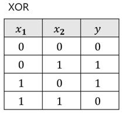
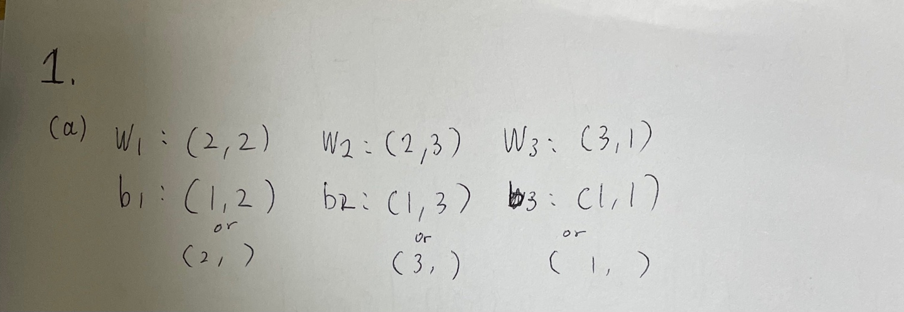
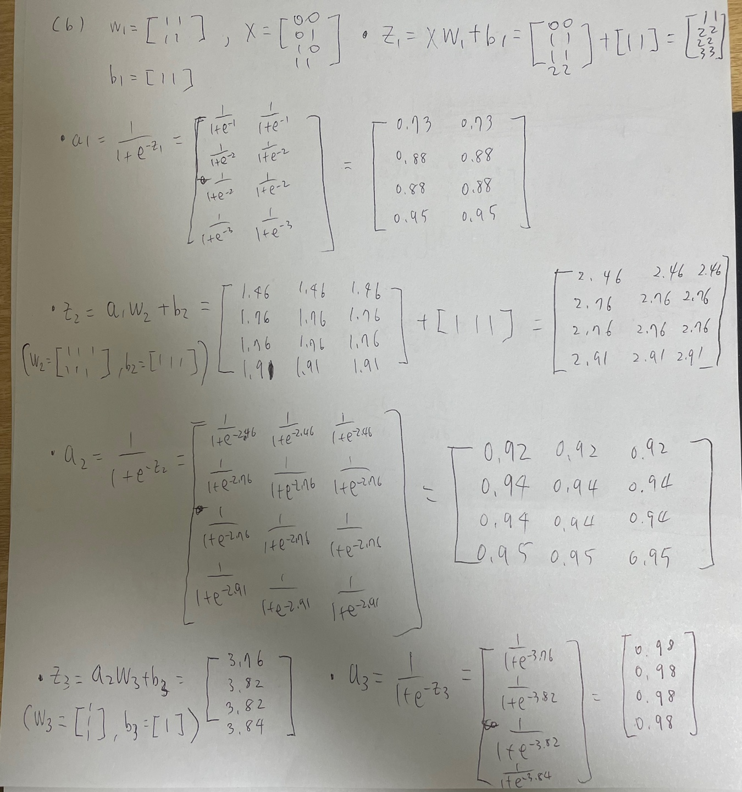
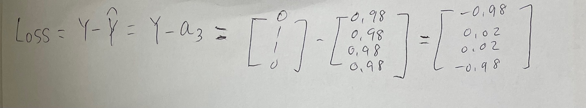
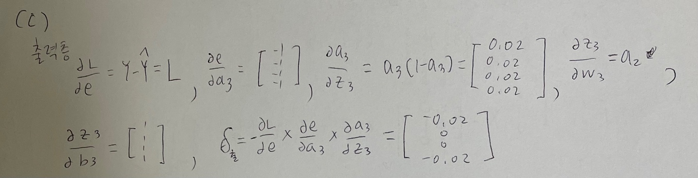
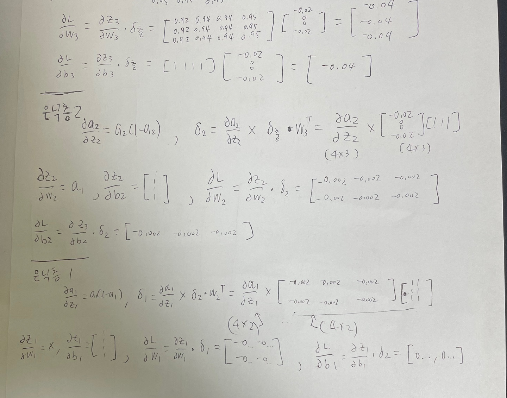
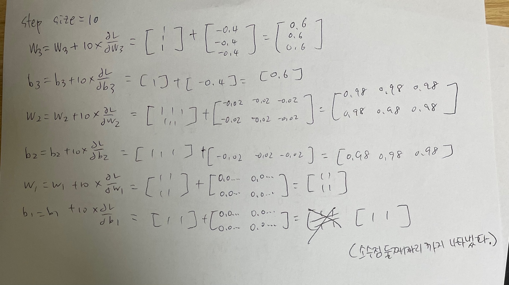
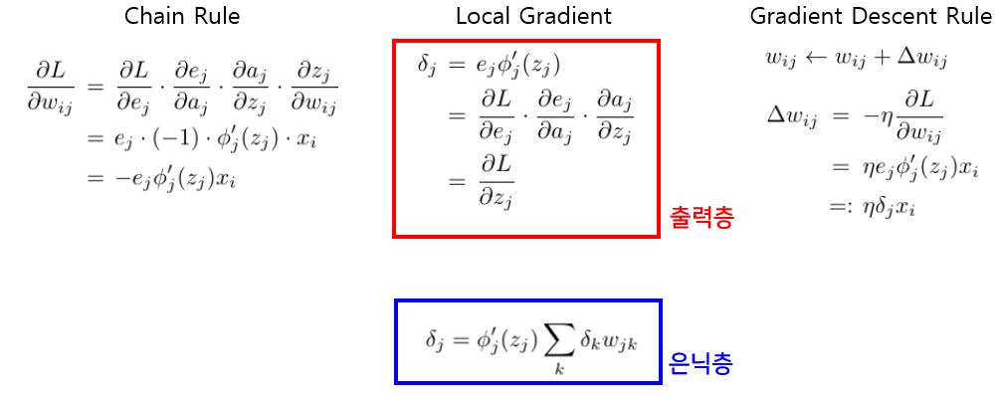
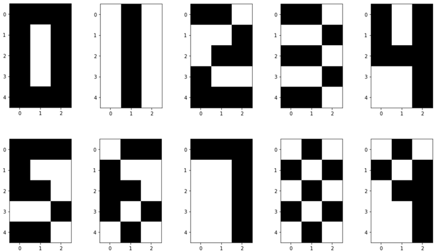
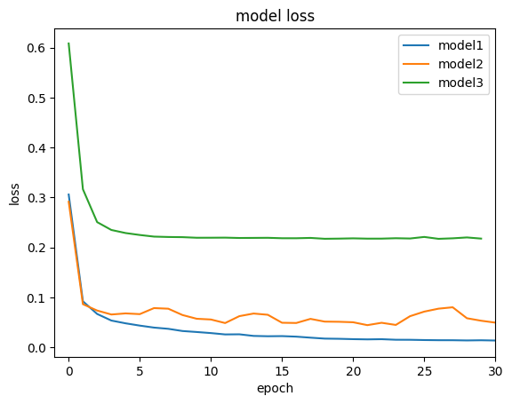

import numpy as np
import matplotlib.pylab as plt
np.random.seed(2023)Assignment · Artificial Neural Networks from Scratch
Hand-computed forward/backward passes, a reusable multi-layer network class, a computational-graph version, and a scikit-learn comparison
Neural network assignment: XOR by hand and in NumPy, a general multi-layer network class with softmax or MSE output, computational-graph layers, and MLPClassifier.
Project at a glance
Problem: Understand forward propagation and backpropagation through a small network, then build reusable layers.
Contribution / scope: Hand-worked XOR calculations and the MultiLayerNeuralNetwork implementation expose the mechanics of training.
Recorded evidence: The page records XOR experiments, custom layer implementations, and a separate scikit-learn comparison.
Limitations: Toy examples and the recorded comparison are not a controlled benchmark. This publication has not rerun training.
NoteAbout this edition
English text and comments were edited for publication. Outputs are archived notebook results, not newly executed results. Exercise prompts and reference illustrations are course material; implementations and handwritten work are presented as coursework. Source and reproducibility notes.
TipSummary
Part 1 solves XOR with a 3-layer network (2–3–1 nodes). The parameter shapes, one full forward pass and one backward pass with all parameters initialized to 1 are worked out by hand (attached as images) and then verified in code; the network is then trained from random initialization. Part 2 packages the same ideas into a general MultiLayerNeuralNetwork class with addLayer / forward / backward / fit / predict, first with a softmax output and cross-entropy loss (XOR, 5×3 digit images), then modified for a tanh output and MSE loss to solve bipolar XOR. Part 3 re-implements the class in the computational-graph style, with Affine, Sigmoid, ReLU and Softmax layer objects. Part 4 compares activation, optimizer and regularization settings of scikit-learn’s MLPClassifier on the breast-cancer dataset.
Artificial Neural Networks
1. XOR with a Multi-layer Network
We implement a binary classifier for the logical XOR operation using a 3-layer neural network.
Follow the instructions below.

X = np.array([[0, 0], [0, 1], [1, 0], [1, 1]])
Y = np.array([[0], [1], [1], [0]])(a) (Handwriting) For a 3-layer network with the node counts below, write down the shapes of W and b of each layer.
- Hidden layer 1: 2 nodes
- Hidden layer 2: 3 nodes
- Output layer: 1 node
Hand-written answer:

(b) (Handwriting) With all parameters (W, b) initialized to 1,
carry out the forward pass of the network and compute the loss by hand; attach the written derivation as an image.
activation: sigmoid / loss: mean squared error
the activation and loss values may be computed with a calculator, rounded to 2 decimal places
intermediate results must be written out step by step
Hand-written derivation:


(c) (Handwriting) Starting from the loss computed above, carry out the backward pass.
Derive the W, b of every layer after one update by hand and attach the derivation as an image.
step size: 10
activation: sigmoid / loss: mean squared error
the activation and loss values may be computed with a calculator, rounded to 2 decimal places
intermediate results must be written out step by step
Hand-written derivation:



(d) Verify the forward and backward passes above in code.
Initialize W and b to 1 and compare the parameters after one update with the hand-computed values.
- step size: 10
def sigmoid(z):
################## Fill Your Code! ##################
return 1 / (1+ np.exp(-z))
#####################################################
def MSE(y, y_hat):
################## Fill Your Code! ##################
# hint : np.mean / np.sum / np.log
J = y - y_hat
#####################################################
return J################## Fill Your Code! ##################
# Initialize W1 b1 W2 b2 W3 b3
W1 = np.ones((2,2))
b1 = np.ones((1, 2))
W2 = np.ones((2,3))
b2 = np.ones((1,3))
W3 = np.ones((3,1))
b3 = np.ones((1,1))
####################################################################### Fill Your Code! ##################
# Forward pass
z1 = X.dot(W1) + b1
a1 = sigmoid(z1)
z2 = a1.dot(W2) + b2
a2 = sigmoid(z2)
z3 = a2.dot(W3) + b3
a3 = sigmoid(z3)
Y_hat = a3
L = MSE(Y, Y_hat)
print(L)
#####################################################[[-0.97734212]
[ 0.02142174]
[ 0.02142174]
[-0.97904707]]
################## Fill Your Code! ##################
# Backward pass
# Output layer
dLde = Y- Y_hat
deda3 = -1*np.ones((4, 1))
da3dz3 = a3*(1-a3)
dz3dW3 = a2
dz3db3 = np.ones((4, 1))
delta3 = dLde*deda3*da3dz3
delta3 = -delta3
dLdW3 = dz3dW3.T.dot(delta3)
dLdb3 = dz3db3.T.dot(delta3)
# Hidden layer 2
da2dz2 = a2*(1-a2)
delta2 = da2dz2* delta3.dot(W3.T)
dz2dW2 = a1
dz2db2 = np.ones((4, 1))
dLdW2 = dz2dW2.T.dot(delta2)
dLdb2 = dz2db2.T.dot(delta2)
# Hidden layer 1
da1dz1 = a1*(1-a1)
delta1 = da1dz1* delta2.dot(W2.T)
dz1dW1 = X
dz1db1 = np.ones((4,1))
dLdW1 = dz1dW1.T.dot(delta1)
dLdb1 = dz1db1.T.dot(delta1)
# Gradient Descent Rule
eta = 10
W3 = W3 + eta*dLdW3
b3 = b3 + eta*dLdb3
W2 = W2 + eta*dLdW2
b2 = b2 + eta*dLdb2
W1 = W1 + eta*dLdW1
b1 = b1 + eta*dLdb1
#####################################################
print("Output layer")
print("W3")
print(W3)
print("b3")
print(b3)
print("\nHidden layer 2")
print("W2")
print(W2)
print("b2")
print(b2)
print("\nHidden layer 1")
print("W1")
print(W1)
print("b1")
print(b1)Output layer
W3
[[0.61860454]
[0.61860454]
[0.61860454]]
b3
[[0.59171288]]
Hidden layer 2
W2
[[0.97957537 0.97957537 0.97957537]
[0.97957537 0.97957537 0.97957537]]
b2
[[0.97495322 0.97495322 0.97495322]]
Hidden layer 1
W1
[[0.99873968 0.99873968]
[0.99873968 0.99873968]]
b1
[[0.98957823 0.98957823]](e) Using the code above, iterate the forward and backward passes to train an XOR classifier.
- step size: 0.1
- number of iterations: 10000
- W, b initialization: random
np.random.seed(2023)
################## Fill Your Code! ##################
W1 = np.random.randn(2,2)
b1 = np.random.randn(1,2)
W2 = np.random.randn(2,3)
b2 = np.random.randn(1,3)
W3 = np.random.randn(3,1)
b3 = np.random.randn(1,1)
#####################################################
n_iterations = 10000
eta = 0.1
for iteration in range(n_iterations):
##################################################
# Forward pass, loss, and backward pass #
##################################################
# Forward pass
z1 = X.dot(W1) + b1
a1 = sigmoid(z1)
z2 = a1.dot(W2) + b2
a2 = sigmoid(z2)
z3 = a2.dot(W3) + b3
a3 = sigmoid(z3)
Y_hat = a3
# MSE
L = MSE(Y, Y_hat)
# Backward pass
# Output layer
dLde = Y- Y_hat
deda3 = -1*np.ones((4, 1))
da3dz3 = a3*(1-a3)
dz3dW3 = a2
dz3db3 = np.ones((4, 1))
delta3 = dLde*deda3*da3dz3
delta3 = -delta3
dLdW3 = dz3dW3.T.dot(delta3)
dLdb3 = dz3db3.T.dot(delta3)
# Hidden layer 2
da2dz2 = a2*(1-a2)
delta2 = da2dz2* delta3.dot(W3.T)
dz2dW2 = a1
dz2db2 = np.ones((4, 1))
dLdW2 = dz2dW2.T.dot(delta2)
dLdb2 = dz2db2.T.dot(delta2)
# Hidden layer 1
da1dz1 = a1*(1-a1)
delta1 = da1dz1* delta2.dot(W2.T)
dz1dW1 = X
dz1db1 = np.ones((4,1))
dLdW1 = dz1dW1.T.dot(delta1)
dLdb1 = dz1db1.T.dot(delta1)
# Gradient Descent Rule
W3 = W3 + eta*dLdW3
b3 = b3 + eta*dLdb3
W2 = W2 + eta*dLdW2
b2 = b2 + eta*dLdb2
W1 = W1 + eta*dLdW1
b1 = b1 + eta*dLdb1
##################################################
# End of my code #
##################################################
print("After Learning")
print("Y_hat")
print(Y_hat)
print("loss")
print(L)After Learning
Y_hat
[[0.06430328]
[0.92710999]
[0.94184193]
[0.05514905]]
loss
[[-0.06430328]
[ 0.07289001]
[ 0.05815807]
[-0.05514905]]def binary_classifier(p_hat):
y_hat = (p_hat >=0.5).astype(int)
return y_hat
binary_classifier(Y_hat)array([[0],
[1],
[1],
[0]])2. A Multi-layer Network Class #1 (Backpropagation)
(a) To solve multi-class problems, implement a multi-layer network class with the following interface:
__init__({num of in_features}, {learning rate}, {num of iteration})
addLayer({num of node}, {activation function})
forward()
backward()
fit({input data}, {output data})
predict({input data}, {prob})
# https://scikit-learn.org/stable/modules/generated/sklearn.metrics.log_loss.html
from scipy.special import softmax
from sklearn.metrics import log_loss as cross_entropy_lossclass MultiLayerNeuralNetwork_softmax:
#### __init__ was provided by the course staff.
def __init__(self, in_features=100, eta=0.01, num_iter=10000):
self.in_features = in_features
self.eta = eta
self.num_iter = num_iter
self.out_features = None
self.num_data = None
self.num_of_layer = 0
# W, b : per-layer weights and biases, stored in dicts.
self.W = {}
self.b = {}
self.act_fun = {} # layer's activation function
# Forward
# Values needed for backpropagation / gradient descent are cached in dicts.
self.loss = None
self.e = None
self.Y = None
self.Y_hat = None
self.X = None
self.a = {}
self.z = {}
self.input = {} # input of each layer (read back during backprop)
self.output = {} # output of each layer (fed to the next layer)
# Backward
# Values needed for backpropagation / gradient descent are cached in dicts.
self.delta = {}
self.grad_W = {}
self.grad_b = {}
self.dLdW = {}
self.dLdb = {}
# Activation functions and their derivatives.
# activation_functions
self.activation_functions = {}
self.activation_functions['sigmoid'] = lambda z: 1 / (1 + np.exp(-z))
self.activation_functions['tanh'] = lambda z: np.tanh(z)
self.activation_functions['softmax'] = lambda z : softmax(z, axis=1)
# activation_functions_prime
self.activation_functions_prime = {}
self.activation_functions_prime['sigmoid'] = lambda a: a * (1 - a)
self.activation_functions_prime['tanh'] = lambda a: (1 - np.tanh(a)) * (1 + np.tanh(a))
self.activation_functions_prime['softmax'] = lambda y_hat, y: (y_hat - y) / y.shape[0]
def addLayer(self, num_of_node=10, activation='sigmoid'):
# Increase the layer counter.
self.num_of_layer += 1
if self.num_of_layer == 1:
# First layer: input size is the number of features.
num_of_input = self.in_features
else:
# Otherwise use the node count of the previous layer.
num_of_input = self.b[self.num_of_layer - 1].shape[1]
#############################################################################
## Determine the shapes of W, b for the new layer ##
#############################################################################
# Store W, b and the activation of the new layer.
self.W[self.num_of_layer] = np.random.randn(num_of_input, num_of_node)
self.b[self.num_of_layer] = np.random.randn(1, num_of_node)
self.act_fun[self.num_of_layer] = activation
def forward(self):
# Forward pass through every layer that has been added.
for i in range(1, self.num_of_layer + 1):
if i == 1:
# The first layer takes the raw input X.
X = self.X
else:
# Later layers take the previous layer's output as input.
X = self.output[i - 1]
#############################################################################
## Forward pass ##
#############################################################################
# load parameters: W, b and the activation of the current layer
W = self.W[i]
b = self.b[i]
act_fun = self.activation_functions[self.act_fun[i]]
# Forward
z = X.dot(W) + b
a = act_fun(z)
# save for backward: cache values used by backpropagation
self.z[i] = z
self.a[i] = a
self.output[i] = a
self.input[i] = X
#############################################################################
## End of my code ##
#############################################################################
# Store the final prediction Y_hat and the loss.
Y_hat = a
loss = cross_entropy_loss(self.Y, Y_hat)
# save for backward
self.Y_hat = a
self.loss = loss
def backward(self):
# Backpropagation starts from the output layer.
eta = self.eta
for i in reversed(range(1, self.num_of_layer + 1)):
# Load: values needed for backpropagation
W = self.W[i]
b = self.b[i]
a = self.a[i]
z = self.z[i]
act_fun = self.act_fun[i]
N = self.num_data
#############################################################################
## Backward pass ##
#############################################################################
# The output layer and the hidden layers are handled differently.
# Output layer
if i == self.num_of_layer:
delta = (self.Y_hat- self.Y)/ N # local gradient
delta = -1 * delta
dzdW = self.input[i]
dzdb = np.ones((N, 1))
dLdW = dzdW.T.dot(delta)
dLdb = dzdb.T.dot(delta)
# Hidden layer
else:
dadz = self.activation_functions_prime[act_fun](a)
delta = dadz * self.delta[i+1].dot(self.W[i+1].T) # local gradient
dzdW = self.input[i]
dzdb = np.ones((N, 1))
dLdW = dzdW.T.dot(delta)
dLdb = dzdb.T.dot(delta)
# Save: values needed by the next layer's backprop and by gradient descent
self.delta[i] = delta
self.dLdW[i] = dLdW
self.dLdb[i] = dLdb
# Gradient Descent
for i in range(1, self.num_of_layer + 1):
# load: partial derivatives
dLdW = self.dLdW[i]
dLdb = self.dLdb[i]
# Save: updated parameters
self.W[i] = self.W[i] + eta*dLdW
self.b[i] = self.b[i] + eta*dLdb
def fit(self, X, Y):
#############################################################################
## Training ##
#############################################################################
# Training alternates forward and backward passes.
self.X = X
self.Y = Y
self.num_data = X.shape[0]
for i in range(self.num_iter):
self.forward()
self.backward()
def predict(self, X, prob = False):
#############################################################################
## Classification: predict ##
#############################################################################
# Unlike forward(), predict() does not cache intermediate values; it only returns the result.
# The result is the predicted class.
for i in range(1, self.num_of_layer + 1):
if i == 1:
# The first layer takes the raw input X.
X = X
else:
# Later layers take the previous layer's output as input.
X = self.output[i-1]
# load parameters: W, b and the activation of the current layer
W = self.W[i]
b = self.b[i]
act_fun = self.activation_functions[self.act_fun[i]]
# forward
z = X.dot(W) + b
a = act_fun(z)
# predict returns either probabilities or class indices.
Y_hat = a
if prob:
return np.round(Y_hat, 2)
else :
return Y_hat.argmax(axis=1)(b) Use the MultiLayerNeuralNetwork_softmax class from (a) to solve XOR.
Configure the network so that XOR is classified correctly.
# https://stackoverflow.com/questions/65643248/one-hot-encoding-from-numpy
def get_one_hot(targets, nb_classes):
res = np.eye(nb_classes)[np.array(targets).reshape(-1)]
return res.reshape(list(targets.shape)+[nb_classes])X = np.array([[0, 0], [0, 1], [1, 0], [1, 1]])
Y = np.array([[0], [1], [1], [0]])
Y = get_one_hot(Y.reshape(-1), 2)#############################################################################
## Build an XOR classifier with the methods defined in the class ##
#############################################################################
MLNN = MultiLayerNeuralNetwork_softmax(in_features=2, eta=0.01, num_iter=10000)
MLNN.addLayer(100, 'sigmoid')
MLNN.addLayer(100, 'sigmoid')
MLNN.addLayer(2, 'softmax')
#############################################################################
## End of my code ##
#############################################################################
MLNN.fit(X, Y)
print(MLNN.loss)0.005743742959291415MLNN.predict(X, prob = False)array([0, 1, 1, 0])MLNN.predict(X, prob = True)array([[1. , 0. ],
[0. , 1. ],
[0.01, 0.99],
[0.99, 0.01]])(c) Modify the class from (a) to solve bipolar XOR (inputs and targets in \(\{-1, +1\}\)).
Modify the network so that it produces the correct Y_b for the input X_b.
- The softmax output is replaced by a mean squared error loss.
- Because the loss changed, the local gradient of the output layer must change as well.
- Think about the shape of the activation function (tanh outputs values in \((-1, 1)\)).
class MultiLayerNeuralNetwork_MSE:
#### __init__ was provided by the course staff.
def __init__(self, in_features=100, eta=0.01, num_iter=10000):
self.in_features = in_features
self.eta = eta
self.num_iter = num_iter
self.out_features = None
self.num_data = None
self.num_of_layer = 0
# W, b : per-layer weights and biases, stored in dicts.
self.W = {}
self.b = {}
self.act_fun = {} # layer's activation function
# Forward
# Values needed for backpropagation / gradient descent are cached in dicts.
self.loss = None
self.e = None
self.Y = None
self.Y_hat = None
self.X = None
self.a = {}
self.z = {}
self.input = {} # input of each layer (read back during backprop)
self.output = {} # output of each layer (fed to the next layer)
# Backward
# Values needed for backpropagation / gradient descent are cached in dicts.
self.delta = {}
self.grad_W = {}
self.grad_b = {}
self.dLdW = {}
self.dLdb = {}
# Activation functions and their derivatives.
# activation_functions
self.activation_functions = {}
self.activation_functions['sigmoid'] = lambda z: 1 / (1 + np.exp(-z))
self.activation_functions['tanh'] = lambda z: np.tanh(z)
# activation_functions_prime
self.activation_functions_prime = {}
self.activation_functions_prime['sigmoid'] = lambda a: a * (1 - a)
self.activation_functions_prime['tanh'] = lambda a: (1 - np.tanh(a)) * (1 + np.tanh(a))
def addLayer(self, num_of_node=10, activation='tanh'):
# Increase the layer counter.
self.num_of_layer += 1
if self.num_of_layer == 1:
# First layer: input size is the number of features.
num_of_input = self.in_features
else:
# Otherwise use the node count of the previous layer.
num_of_input = self.b[self.num_of_layer - 1].shape[1]
#############################################################################
## Determine the shapes of W, b for the new layer ##
#############################################################################
# Store W, b and the activation of the new layer.
self.W[self.num_of_layer] = np.random.randn(num_of_input, num_of_node)
self.b[self.num_of_layer] = np.random.randn(1, num_of_node)
self.act_fun[self.num_of_layer] = activation
#############################################################################
## End of my code ##
#############################################################################
def forward(self):
# Forward pass through every layer that has been added.
for i in range(1, self.num_of_layer + 1):
if i == 1:
# The first layer takes the raw input X.
X = self.X
else:
# Later layers take the previous layer's output as input.
X = self.output[i - 1]
#############################################################################
## Forward pass ##
#############################################################################
# load parameters: W, b and the activation of the current layer
W = self.W[i]
b = self.b[i]
act_fun = self.activation_functions[self.act_fun[i]]
# Forward
z = X.dot(W) + b
a = act_fun(z)
# save for backward: cache values used by backpropagation
self.z[i] = z
self.a[i] = a
self.output[i] = a
self.input[i] = X
#############################################################################
## End of my code ##
#############################################################################
# Store the final prediction Y_hat and the loss.
# The loss is the mean squared error.
Y_hat = a
loss = np.mean((self.Y - Y_hat)**2)
# save for backward
self.Y_hat = a
self.loss = loss
def backward(self):
# Backpropagation starts from the output layer.
eta = self.eta
for i in reversed(range(1, self.num_of_layer + 1)):
# Load: values needed for backpropagation
W = self.W[i]
b = self.b[i]
a = self.a[i]
z = self.z[i]
act_fun = self.act_fun[i]
N = self.num_data
#############################################################################
## Backward pass ##
#############################################################################
# The output layer and the hidden layers are handled differently.
# This differs from the softmax + cross-entropy case.
# Output layer
if i == self.num_of_layer:
dLde = self.Y-self.Y_hat
deda = -1 * np.ones((N,1))
dadz = self.activation_functions_prime[act_fun](a)
delta = -1 * dLde*deda*dadz # local gradient
dzdW = self.input[i]
dzdb = np.ones((N, 1))
dLdW = dzdW.T.dot(delta)
dLdb = dzdb.T.dot(delta)
# Hidden layer
else:
dadz = self.activation_functions_prime[act_fun](a)
delta = dadz * self.delta[i+1].dot(self.W[i+1].T) # local gradient
dzdW = self.input[i]
dzdb = np.ones((N, 1))
dLdW = dzdW.T.dot(delta)
dLdb = dzdb.T.dot(delta)
# Save: values needed by the next layer's backprop and by gradient descent
self.delta[i] = delta
self.dLdW[i] = dLdW
self.dLdb[i] = dLdb
# Gradient Descent
for i in range(1, self.num_of_layer + 1):
# load: partial derivatives
dLdW = self.dLdW[i]
dLdb = self.dLdb[i]
# Save: updated parameters
self.W[i] = self.W[i] + eta*dLdW
self.b[i] = self.b[i] + eta*dLdb
#############################################################################
## End of my code ##
#############################################################################
def fit(self, X, Y):
#############################################################################
## Training ##
#############################################################################
# Training alternates forward and backward passes.
self.X = X
self.Y = Y
self.num_data = X.shape[0]
for i in range(self.num_iter):
self.forward()
self.backward()
#############################################################################
## End of my code ##
#############################################################################
def predict(self, X):
#############################################################################
## Classification: predict ##
#############################################################################
# Unlike forward(), nothing is cached; only the result is returned.
# The result is the class output.
for i in range(1, self.num_of_layer + 1):
if i == 1:
# The first layer takes the raw input X.
X = X
else:
# Later layers take the previous layer's output as input.
X = self.output[i-1]
# load parameters: W, b and the activation of the current layer
W = self.W[i]
b = self.b[i]
act_fun = self.activation_functions[self.act_fun[i]]
# forward
z = X.dot(W) + b
a = act_fun(z)
#############################################################################
## End of my code ##
#############################################################################
Y_hat = a
return Y_hatX = np.array([[0, 0], [0, 1], [1, 0], [1, 1]])
Y = np.array([[0], [1], [1], [0]])
Y = get_one_hot(Y.reshape(-1), 2)def binary_to_bipolar(bin):
# https://stackoverflow.com/questions/39650312/convert-a-numpy-array-into-an-array-of-signs-with-0-as-positive
bip = 2*(bin > 0) - 1
return bip
X_b = binary_to_bipolar(X)
Y_b = binary_to_bipolar(Y)print(X_b)
print("")
print(Y_b)[[-1 -1]
[-1 1]
[ 1 -1]
[ 1 1]]
[[ 1 -1]
[-1 1]
[-1 1]
[ 1 -1]]#############################################################################
## Build an XOR classifier with the methods defined in the class ##
#############################################################################
MLNN = MultiLayerNeuralNetwork_MSE(in_features=2, eta=0.01, num_iter=10000)
MLNN.addLayer(10, 'sigmoid')
MLNN.addLayer(2, 'tanh')
#############################################################################
## End of my code ##
#############################################################################
MLNN.fit(X_b, Y_b)
print(MLNN.loss)0.00018629744772954572MLNN.predict(X_b)array([[ 0.98605757, -0.98974741],
[-0.98206643, 0.98691116],
[-0.98510815, 0.98909248],
[ 0.9846056 , -0.98904641]])(d) Use the MultiLayerNeuralNetwork_softmax class from (a) to build a digit classifier for the 5×3 pixel images below.
Configure the network so that the digits are classified correctly.

D0 = np.array([[1, 1, 1],
[1, 0, 1],
[1, 0, 1],
[1, 0, 1],
[1, 1, 1]])
D1 = np.array([[0, 1, 0],
[0, 1, 0],
[0, 1, 0],
[0, 1, 0],
[0, 1, 0]])
D2 = np.array([[1, 1, 0],
[0, 0, 1],
[0, 1, 1],
[1, 0, 0],
[1, 1, 1]])
D3 = np.array([[1, 1, 0],
[0, 0, 1],
[1, 1, 0],
[0, 0, 1],
[1, 1, 0]])
D4 = np.array([[1, 0, 1],
[1, 0, 1],
[1, 1, 1],
[0, 0, 1],
[0, 0, 1]])
D5 = np.array([[1, 1, 1],
[1, 0, 0],
[1, 1, 0],
[0, 0, 1],
[1, 1, 0]])
D6 = np.array([[0, 1, 1],
[1, 0, 0],
[1, 1, 0],
[1, 0, 1],
[0, 1, 0]])
D7 = np.array([[1, 1, 1],
[0, 0, 1],
[0, 0, 1],
[0, 0, 1],
[0, 0, 1]])
D8 = np.array([[0, 1, 0],
[1, 0, 1],
[0, 1, 0],
[1, 0, 1],
[0, 1, 0]])
D9 = np.array([[0, 1, 0],
[1, 0, 1],
[0, 1, 1],
[0, 0, 1],
[0, 0, 1]])(The MultiLayerNeuralNetwork_softmax class defined in Part 2(a) is reused unchanged.)
# https://stackoverflow.com/questions/65643248/one-hot-encoding-from-numpy
def get_one_hot(targets, nb_classes):
res = np.eye(nb_classes)[np.array(targets).reshape(-1)]
return res.reshape(list(targets.shape)+[nb_classes])
# Class label of each x
X = np.array([D0, D1, D2, D3, D4, D5, D6, D7, D8, D9])
Y = np.array([[0], [1], [2], [3], [4], [5], [6], [7], [8], [9]])
# Flatten and one-hot encode
X = X.reshape(X.shape[0], -1).copy()
Y = get_one_hot(Y.reshape(-1), Y.shape[0])#############################################################################
## Build a classifier with the methods defined in the class ##
#############################################################################
MLNN = MultiLayerNeuralNetwork_softmax(in_features=15, eta=0.01, num_iter=10000)
MLNN.addLayer(100, 'sigmoid')
MLNN.addLayer(100, 'sigmoid')
MLNN.addLayer(10, 'softmax')
#############################################################################
## End of my code ##
#############################################################################
MLNN.fit(X, Y)
print(MLNN.loss)0.006094069911130735MLNN.predict(X, prob = False)array([0, 1, 2, 3, 4, 5, 6, 7, 8, 9])MLNN.predict(X, prob = True)array([[1. , 0. , 0. , 0. , 0. , 0. , 0. , 0. , 0. , 0. ],
[0. , 1. , 0. , 0. , 0. , 0. , 0. , 0. , 0. , 0. ],
[0. , 0. , 0.99, 0. , 0. , 0. , 0. , 0. , 0. , 0. ],
[0. , 0. , 0. , 0.99, 0. , 0. , 0. , 0. , 0. , 0. ],
[0. , 0. , 0. , 0. , 0.99, 0. , 0. , 0. , 0. , 0. ],
[0. , 0. , 0. , 0. , 0. , 0.99, 0. , 0. , 0. , 0. ],
[0. , 0. , 0. , 0. , 0. , 0. , 0.99, 0. , 0. , 0. ],
[0. , 0. , 0. , 0. , 0. , 0. , 0. , 0.99, 0. , 0. ],
[0. , 0. , 0. , 0. , 0. , 0. , 0. , 0. , 1. , 0. ],
[0. , 0. , 0. , 0. , 0. , 0. , 0. , 0. , 0. , 0.99]])3. A Multi-layer Network Class #2 (Computational Graph)
(a) Re-implement the forward/backward passes of the class from Part 2 as a computational graph.
__init__({num of in_features}, {learning rate}, {num of iteration})
addLayer({num of node}, {activation function})
forward({input data})
gradient({input data}, {output data})
fit({input data}, {output data})
# Basic functions and layer classes for the computational graph
import numpy as np
def softmax(x):
if x.ndim == 2:
x = x.T
x = x - np.max(x, axis=0)
y = np.exp(x) / np.sum(np.exp(x), axis=0)
return y.T
x = x - np.max(x) # guard against overflow
return np.exp(x) / np.sum(np.exp(x))
def cross_entropy_error(y, t):
if y.ndim == 1:
t = t.reshape(1, t.size)
y = y.reshape(1, y.size)
# If the labels are one-hot vectors, convert them to class indices
if t.size == y.size:
t = t.argmax(axis=1)
batch_size = y.shape[0]
return -np.sum(np.log(y[np.arange(batch_size), t] + 1e-7)) / batch_size
class Affine:
def __init__(self, W, b):
self.W = W
self.b = b
self.x = None
self.original_x_shape = None
# Gradients of the weights and biases
self.dW = None
self.db = None
def forward(self, x):
# Support tensor inputs
self.original_x_shape = x.shape
x = x.reshape(x.shape[0], -1)
self.x = x
out = np.dot(self.x, self.W) + self.b
return out
def backward(self, dout):
dx = np.dot(dout, self.W.T)
self.dW = np.dot(self.x.T, dout)
self.db = np.sum(dout, axis=0)
dx = dx.reshape(*self.original_x_shape) # restore the input shape (tensor support)
return dx
class Relu:
def __init__(self):
self.mask = None
def forward(self, x):
self.mask = (x <= 0)
out = x.copy()
out[self.mask] = 0
return out
def backward(self, dout):
dout[self.mask] = 0
dx = dout
return dx
class Sigmoid:
def __init__(self):
self.out = None
def forward(self, x):
out = 1 / (1 + np.exp(-x)) # Definition sigmoid
self.out = out
return out
def backward(self, dout):
dx = dout * (1.0 - self.out) * self.out
return dx
class Softmax:
def __init__(self):
self.loss = None # loss
self.y_hat = None # softmax output
self.y = None # ground-truth labels (one-hot)
def forward(self, x):
self.y_hat = softmax(x)
return self.y_hat
def compute_loss(self, y):
self.y = y
self.loss = cross_entropy_error(self.y_hat, self.y)
return self.loss
def backward(self, dout=1):
batch_size = self.y.shape[0]
if self.y.size == self.y_hat.size: # labels are one-hot encoded
dx = (self.y_hat - self.y) / batch_size
else:
dx = self.y_hat.copy()
dx[np.arange(batch_size), self.y] -= 1
dx = dx / batch_size
return dxclass MultiLayerNeuralNetwork_softmax:
def __init__(self, in_features=100, eta=0.01, num_iter=10000):
self.in_features = in_features
self.eta = eta
self.num_iter = num_iter
self.num_of_layer = 0
# Per-layer W, b stored in a dict.
self.params = {}
# Layer objects stored in a dict (insertion ordered).
self.layers = {}
# Available activation layers.
# activation_functions
self.activation_functions = {}
self.activation_functions['sigmoid'] = Sigmoid
self.activation_functions['relu'] = Relu
self.activation_functions['softmax'] = Softmax
def addLayer(self, num_of_node=10, activation='sigmoid'):
# Increase the layer counter.
self.num_of_layer += 1
if self.num_of_layer == 1:
# First layer: input size is the number of features.
num_of_input = self.in_features
else:
# Otherwise use the node count of the previous layer.
num_of_input = self.params['b' + str(self.num_of_layer - 1)].shape[1]
# Store W, b of the new layer.
#############################################################################
## Create random W, b and store them in params ##
#############################################################################
W = np.random.randn(num_of_input, num_of_node)
b = np.random.randn(1, num_of_node)
self.params['W' + str(self.num_of_layer)] = W
self.params['b' + str(self.num_of_layer)] = b
#############################################################################
## End of my code ##
#############################################################################
# Add the affine layer and its activation layer.
#############################################################################
## Create a new Affine layer and hand it the parameters W, b ##
## Then append the activation function as its own layer ##
#############################################################################
self.layers['Affine' + str(self.num_of_layer)] = Affine(W, b)
self.layers[activation + str(self.num_of_layer)] = self.activation_functions[activation]()
#############################################################################
## End of my code ##
#############################################################################
self.lastLayer = self.layers[activation + str(self.num_of_layer)]
def forward(self, x):
# Run every layer in forward order.
#############################################################################
## Run forward() layer by layer ##
#############################################################################
for layer in self.layers.values():
x = layer.forward(x)
#############################################################################
## End of my code ##
#############################################################################
y_hat = x
return y_hat
# x: input data, y: ground-truth labels
def compute_loss(self, x, y):
self.forward(x)
self.loss = self.lastLayer.compute_loss(y)
return self.loss
def gradient(self, x, y):
# forward & loss
self.compute_loss(x, y)
# backward
layers = list(self.layers.values())
layers.reverse()
dout = 1
#############################################################################
## Run backward() in reverse layer order ##
#############################################################################
for layer in layers:
dout = layer.backward(dout)
#############################################################################
## End of my code ##
#############################################################################
# save grads
grads = {}
#############################################################################
## Collect the gradients ##
#############################################################################
for idx in range(1, self.num_of_layer+1):
grads['W' + str(idx)] = self.layers['Affine' + str(idx)].dW
grads['b' + str(idx)] = self.layers['Affine' + str(idx)].db
#############################################################################
## End of my code ##
#############################################################################
return grads
def fit(self, x, y):
for epoch in range(1, self.num_iter+1):
grads = self.gradient(X, Y)
#############################################################################
## Gradient descent step ##
#############################################################################
for idx in range(1, self.num_of_layer+1):
self.params['W' + str(idx)] -= self.eta*grads['W' + str(idx)]
self.params['b' + str(idx)] -= self.eta*grads['b' + str(idx)]
#############################################################################
## End of my code ##
#############################################################################
def predict(self, x, prob):
# Run every layer in forward order.
for layer in self.layers.values():
x = layer.forward(x)
# predict returns either probabilities or class indices.
y_hat = x
if prob:
return np.round(y_hat, 2)
else :
return y_hat.argmax(axis=1)(b) Use the computational-graph MultiLayerNeuralNetwork_softmax class from (a) to solve XOR.
Configure the network so that XOR is classified correctly.
# https://stackoverflow.com/questions/65643248/one-hot-encoding-from-numpy
def get_one_hot(targets, nb_classes):
res = np.eye(nb_classes)[np.array(targets).reshape(-1)]
return res.reshape(list(targets.shape)+[nb_classes])X = np.array([[0, 0], [0, 1], [1, 0], [1, 1]])
Y = np.array([[0], [1], [1], [0]])
Y = get_one_hot(Y.reshape(-1), 2)#############################################################################
## Build an XOR classifier with the methods defined in the class ##
#############################################################################
MLNN = MultiLayerNeuralNetwork_softmax(in_features=2, eta=0.01, num_iter=10000)
MLNN.addLayer(num_of_node=100, activation='sigmoid')
MLNN.addLayer(num_of_node=100, activation='sigmoid')
MLNN.addLayer(num_of_node=2, activation='softmax')
#############################################################################
## End of my code ##
#############################################################################
MLNN.fit(X, Y)
print(MLNN.loss)0.005202357090297315MLNN.predict(X, prob = False)array([0, 1, 1, 0])MLNN.predict(X, prob = True)array([[1. , 0. ],
[0. , 1. ],
[0.01, 0.99],
[0.99, 0.01]])4. A Multi-layer Network #3 (scikit-learn)
The breast-cancer dataset is split into train / validation / test sets and standardized. Three MLPClassifier configurations are compared: ReLU + SGD, logistic + Adam, and logistic + SGD with a stronger L2 penalty (alpha=0.5).
from sklearn.neural_network import MLPClassifier
from sklearn.datasets import load_breast_cancer
from sklearn.model_selection import train_test_split
from sklearn.preprocessing import StandardScaler
import numpy as np
cancer = load_breast_cancer()
x=cancer.data
y=cancer.target
x_train_all, x_test, y_train_all, y_test = train_test_split(x,y,stratify=y,test_size=0.2,random_state=42)
x_train, x_val, y_train, y_val = train_test_split(x_train_all,y_train_all,stratify=y_train_all, test_size=0.2,random_state=42)
scaler = StandardScaler()
scaler.fit(x_train)
x_train_scaled = scaler.transform(x_train)
x_val_scaled = scaler.transform(x_val)mlp = MLPClassifier(hidden_layer_sizes=(10,), activation='logistic', solver='sgd', alpha=0.01, batch_size=32, learning_rate_init=0.1, max_iter=500)
mlp.fit(x_train_scaled, y_train)
mlp.score(x_val_scaled, y_val)0.989010989010989model1 = MLPClassifier(hidden_layer_sizes=(10,), activation='relu', solver='sgd', alpha=0.01, batch_size=32, learning_rate_init=0.1, max_iter=500)
history1 = model1.fit(x_train_scaled, y_train)model2 = MLPClassifier(hidden_layer_sizes=(10,), activation='logistic', solver='adam', alpha=0.01, batch_size=32, learning_rate_init=0.1, max_iter=500)
history2 = model2.fit(x_train_scaled, y_train)model3 = MLPClassifier(hidden_layer_sizes=(10,), activation='logistic', solver='sgd', alpha=0.5, batch_size=32, learning_rate_init=0.1, max_iter=500)
history3 = model3.fit(x_train_scaled, y_train)import matplotlib.pyplot as plt
# summarize history for accuracy
plt.title( 'model loss' )
plt.xlabel( 'epoch' )
plt.ylabel( 'loss' )
plt.plot(history1.loss_curve_)
plt.plot(history2.loss_curve_)
plt.plot(history3.loss_curve_)
plt.xlim(-1,30)
plt.legend([ 'model1' , 'model2', 'model3' ], loc= 'upper right' )
plt.show()